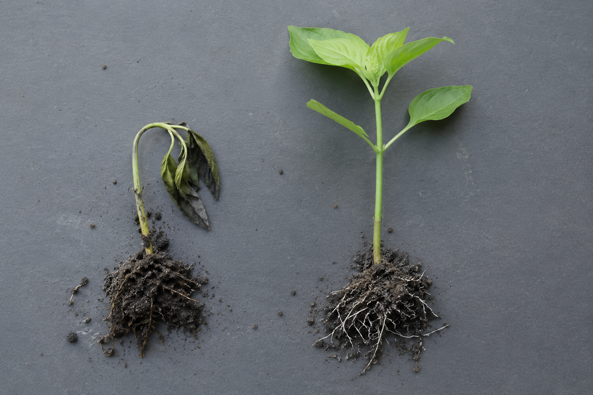

Inicio > Notas críticas > Desde Quisquiza (10 de 20)
Desde Quisquiza (10 de 20)
Escarcha
La noche en que el frío se llevó puesto todo
Esta nota forma parte de una serie escrita desde Quisquiza, en los Andes colombianos, donde territorio y trabajo intelectual ya no están separados. Examina cómo ese cruce transforma mi manera de pensar la memoria, la información y las estructuras que las sostienen. Consulte todas las notas en el índice de esta sección.
Hay mañanas en las que las hojas aparecen magulladas. Sus bordes se oscurecieron. Los tallos tiernos se doblaron. Los brotes nuevos, que estaban erguidos la tarde-noche anterior, ahora están aplastados contra el suelo. Parece como si los Cuatro Jinetes del Apocalipsis hubieran arrasado con todo.
Pero no. Solo fue una noche de escarcha.
La escarcha no perdona. Unas pocas horas de frío echan por tierra semanas de trabajo. Las plántulas que parecían bien establecidas se marchitan al amanecer. Las viejas tejas de barro del tejado se agrietan durante la noche.
(Puedo oírlas. Un sonido agudo sobre el techo. Luego otro. Ajá. Acojonante).
Para cuando salgo con mi tinto, mi café negro colombiano, el evento ya pasó. El cielo está despejado. El aire se siente frío, pero normal. Solo los daños revelan lo que sucedió durante las horas más oscuras.
(Y te dan ganas de llorar. O de putear. O de las dos cosas a la vez. En voz bien alta).
La escarcha es extraña porque la diferencia entre resistencia y daño puede ser mínima. Una planta tolera el frío hasta que la temperatura desciende ligeramente o se mantiene baja durante uno sminutos de más. El agua cambia de estado, las células pierden humedad, las membranas se rompen... Uno o dos grados separan las condiciones adversas del daño irreversible.
El cambio es pequeño. Las consecuencias no lo son.
Algunas plantas sobreviven intactas. Otras, a pocos metros de distancia, se arruinan totalmente. Una plántula bajo una hoja más grande permanece verde. Otra, en terreno abierto, se marchita. Las plantas que están cerquita del muro de piedra sobreviven porque este libera algo de calor durante la noche. El aire frío se asienta en una depresión poco profunda y arrasa con todo lo que tuvo la mala idea de crecer ahí.
La mañana revela diferencias que habían permanecido invisibles mientras las condiciones eran favorables: exposición, protección, humedad, edad, ubicación, estrés previo. La huerta y el jardín nunca habían sido terreno uniforme. Solo lo parecían porque nada había traspasado aún sus límites.
Los sistemas humanos también pueden parecer estables mientras operan muy cerca de un límite.
El trabajo continúa. Las solicitudes se responden. Las colecciones siguen accesibles. Los proyectos avanzan. Se presentan informes. Pero puede que no haya tiempo libre, ni sustituto para un trabajador esencial, ni margen en el presupuesto, ni ruta alternativa cuando falla un proceso, ni capacidad para absorber una demanda más.
Entonces, algo relativamente pequeño va y cambia. Una persona se va, una subvención se termina, un servidor falla, una fecha límite se adelanta, un conflicto que se había contenido se vuelve imposible de ignorar...
El evento inmediato recibe la culpa del desastre porque ocurrió al final. Pero el umbral se había ido construyendo de a poco, a través de la carga de trabajo acumulada, el mantenimiento postergado, el conocimiento concentrado, las relaciones desgastadas y la desaparición gradual de alternativas.
La caída final, el pequeño grado extra, provocó el colapso de la planta. Pero la planta llegó a ese punto cargando con toda su historia.
La eficiencia a menudo acerca a los sistemas a ese límite. La capacidad no utilizada parece un desperdicio. El conocimiento superpuesto parece redundante. El tiempo no asignado parece disponible para otra tarea. Una segunda ruta parece innecesaria mientras la primera funcione. Todo se ajusta al máximo en pos de ser eficientes.<
El sistema resultante puede ser productivo, elegante e impresionantemente organizado. También puede tener un margen casi nulo entre la tensión normal y el colapso.
El margen es difícil de valorar porque consiste, en parte, en lo que no se utiliza: una hora extra, un fondo de reserva, otra persona que comprenda los procesos, un procedimiento que permita excepciones, una relación lo suficientemente sólida como para superar los desacuerdos... Parece innecesario — hasta que llega el frío.
Las heladas también ponen de manifiesto las limitaciones de los promedios. Un mes de noches tolerables en promedio no anula la única hora en que el tejido vivo se congela. Una institución puede funcionar bien la mayor parte del tiempo y aun así depender de un pequeño evento o momento cuyo fallo lo cambia todo.
Los promedios describen el clima en general. Los umbrales, por su parte, deciden qué sobrevive a la noche.
A media mañana, la luz del sol llega a la huerta y al jardín. Las gotas se acumulan en las hojas dañadas. Desde la distancia, casi que parecen sanas.
Pero no lo están. El aire se calentó, pero las células no van a revertir lo que les sucedió. La baldosa no va a cerrar su grieta. Las condiciones normales regresan, pero el daño persiste.
No puedo diseñar la siguiente plantada en base a las condiciones en las que la primera creció bien. También debo tener en cuenta las breves condiciones en las que no logró aguantar. No porque todas las noches vaya a haber heladas...
...sino porque en una de ellas sí las habrá.
El frío enseña rápido. Enseña que la aparente estabilidad puede extenderse hasta el borde del colapso. Que pequeños cambios pueden tener consecuencias totalmente desproporcionadas a su magnitud. Y que la supervivencia puede depender de lo que parecía innecesario un ahora antes.
El muro de piedra. Las hojas más viejas. El espacio vacío. La hora extra. La segunda persona que lo sabe.
(Y estoy empezando a aprender, a las bravas, cuáles son mis propios límites. Cagüentó...)